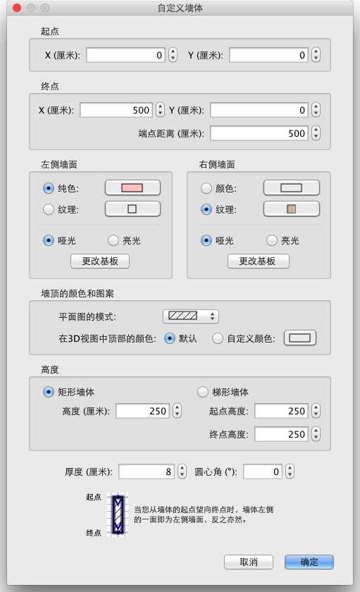

| 自定义墙体 | |||
如果您要自定义家居模型中墙体的位置和长度，您既可以用鼠标直接在平面图中操作，也可以使用平面图→自定义墙体... 菜单项。 如果平面图中只有一堵墙体被选中的话，拖曳被选墙体两端的标示符可以更改墙体起点和终点的位置。
|

|
当鼠标指针位于选中墙体的起点或终点上时，其形状会发生变化，指示您可以拖曳鼠标移动该点。当鼠标按钮处于按下状态时，鼠标指针的旁边会显示出标明墙体长度的工具提示。 自定义墙体的另一种途径是使用“自定义墙体”对话框，方法是在平面图中双击您想要更改的墙体，或者在选中要更改的墙体后使用平面图→自定义墙体... 菜单项。  在该对话框中，您可以更改墙体起点和终点的坐标位置、墙体左右两侧的纹理或颜色，以及其厚度和高度。 |
|